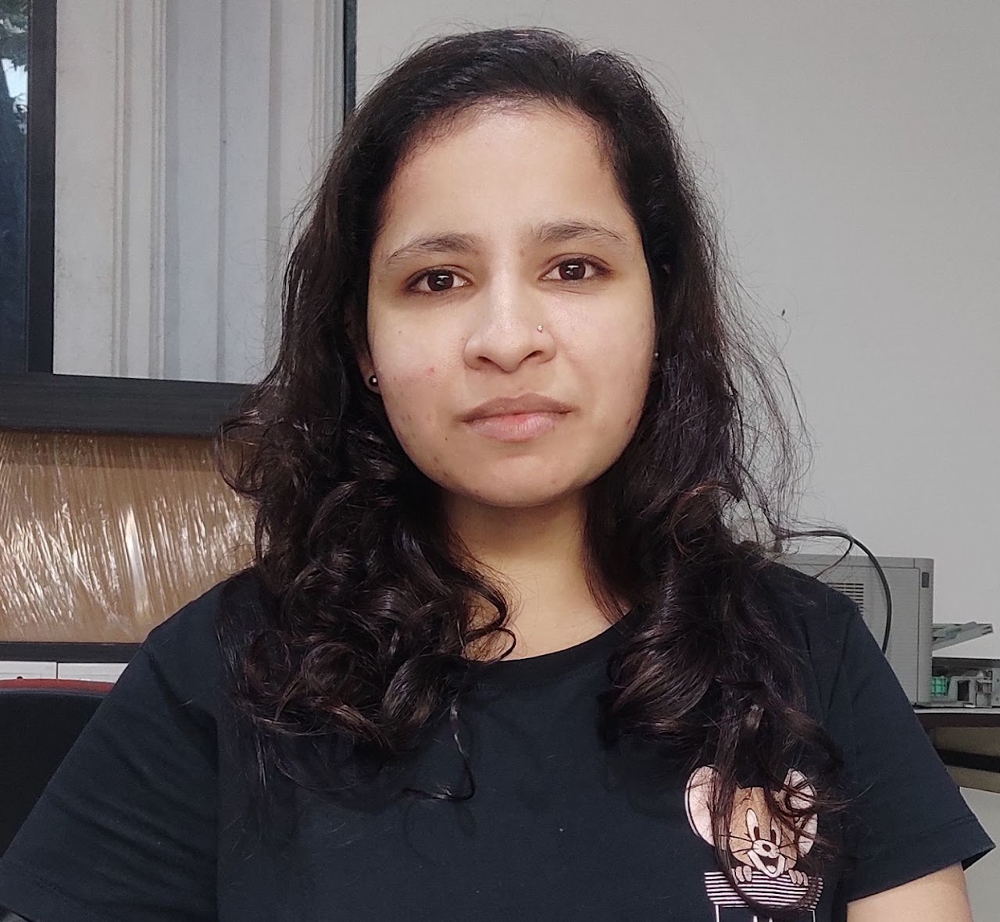
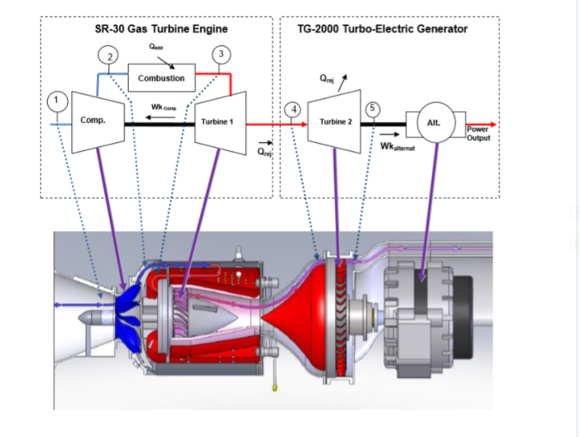
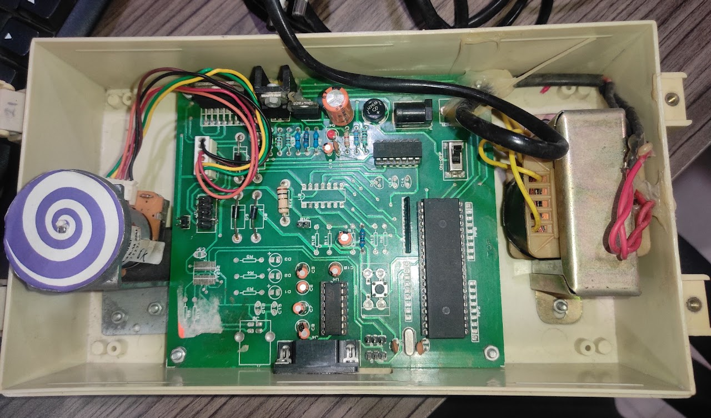
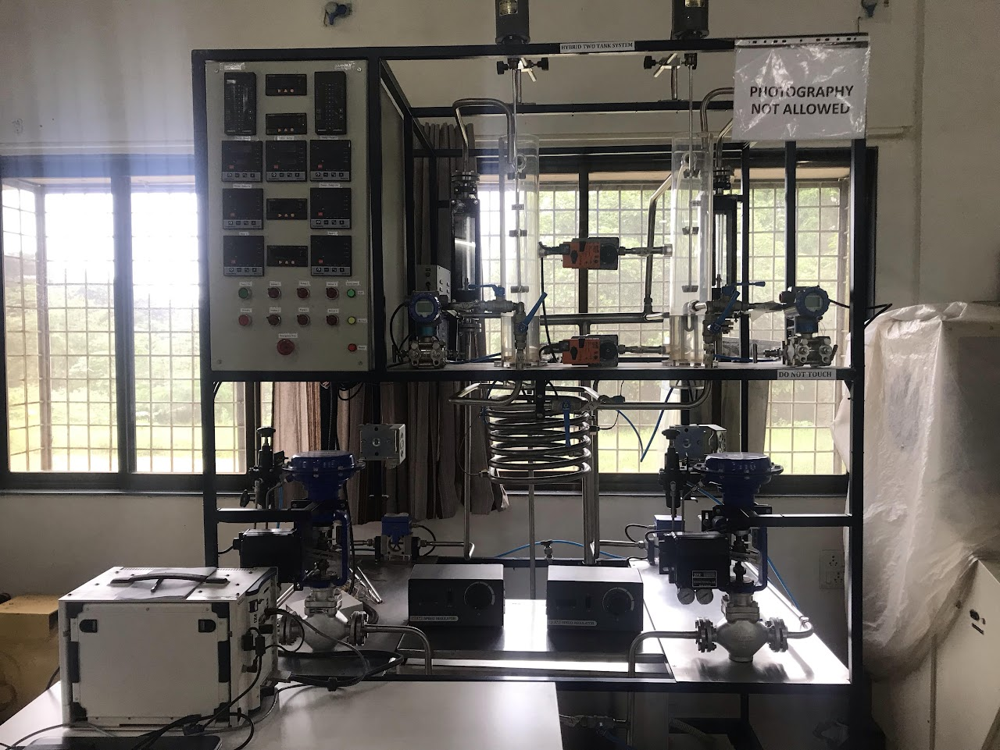

|
Dr. Richa Singh
Hi, I'm Richa! I am an Application Engineer at MathWorks in Hyderabad, India. I specialize in empowering both commercial and government customers to forge innovative aerospace and defense solutions. My journey in this domain is fueled by a passion for merging theoretical knowledge with practical applications, particularly in control design and automation for aerospace applications.
I completed my Masters + PhD Dual Degree in Aerospace Engineering from Indian Institute of Technology, Bombay (IITB), with a specialization in Dynamics and controls, in 2015-2022. My doctoral research focused on the dynamic modeling and nonlinear control of a laboratory mini SR-30 gas turbine engine. This challenging yet rewarding endeavor led me to develop a first-principle-based dynamic model of the engine, which was further enhanced by testing and validating various nonlinear control laws.
I've had the pleasure of speaking at:
- Matlab EXPO 2018 (Hyderabad, April 26, 2018), “Dynamic modeling of laboratory gas turbine engine using
deep learning frameworks in Matlab”, International Convention Centre, Hyderabad - 500081, India.
- Nvidia Developer Connect 2018 (Bengaluru, October 5, 2018), “Machine learning and deep learning
applications in gas turbine engine”, Sheraton Grand, Hoodi, Whitefield, Bengaluru - 560048, India..
- Industry speaker at eminent institute , IIT Hyderabad, IIIT Hyderabad on autonomous system.
- Multiple technical session on Aerospace systems and subsystems domain such as end to end work for developing algorithm for autonomous systems (UAV, AUV, ASV), Motor control applications, robotics workflow.
I love to play table tennis, badminton and basketball, and also an avid reader. I developed a talant for Mandala Art during COVID Lockdown.
Email /
CV /
Bio /
Scholar /
ResearchGate /
LinkedIn
|

|

|
Interactive Fast Annotation Method for Machine Learning pipelines
Masters thesis, IBM Research Zurich
(Ongoing)
August 2021 - January 2022
In recent times, deep learning methods have achieved remarkable performance on various computer vision tasks, thanks to the availability of large, well-curated data sets (e.g. ImageNet, COCO). However, there still exist several application scenarios where either the amount or quality of annotations is limited. This warrants a need for a solution in novel use cases that includes annotating or re-annotating application specific data. Existing tools for annotations present several limitations including operating with high-resolution images, as well as annotating rare application data, such as defects on concrete surfaces. To address these issues, we are working towards developing a method for auto-annotation.
|

|
Introduction to ML/DL algorithm with Engineering systems
Primery teaching assistance, IBM Research Zurich
(Patent pending)
July 2020 - January 2021
I have assisted Prof. P. S. V. Nataraj, in Faculty development program. The objectives is to enabled faculties understands the basic machine learning and deep learning. The key factor here is we developed our own data from various laboratory set-ups such as Gas turbine engine, Hybrid-2-tank system, DC Motor and implemented ML/DL algorithm for system identification and fault diagnosis in real-time. I was responsible to develop the entire five-days course curriculum. The program was attended by faculty from premium institute such as NITs and industry like BPCL.
|
|

|
First-principle Modeling of a Laboratory Engine
Semester Project, CV Lab, EPFL
(Publication in progress)
February 2021 - June 2021
A first principles based mathematical model of a laboratory SR-30 engine is developed using the state variable method. The aim is to utilize the model to
obtain the shaft speed (RPM) response with fuel flow as input.
The mathematical model captures both the steady state and transient behavior of the engine.
In addition, the model incorporates actuator dynamics to enable control related studies. A
simulator with a graphical user interface is then developed in the Simulink environment. The
steady state and transient simulation results are validated against experimental data obtained from the laboratory SR-30 engine. The simulation results are found to be in good agreement with the experimental runs.
Report
|
|

|
Hands-on experiment with DC Motor kit
Dual Degree thesis, Prof Nikhil Karamchandani, IITB
(AAAI 2020)
January 2018 - June 2019
A DC motor kit, formulated, fabricated and manufactured inside the lab is utilized for various experimental control-related studies. Implementation of PID control on the DC Motor with gain scheduling and QFT based control. Demonstrated hands-on SISO modeling of DC Motor with a Long-short-term-memory network. The dynamic model validation is carried out in real-time by sending same PWM to DC motor and the developed DL model. perform fault diagnosis by chanhing the load on DC motor.
AAAI 2020 Paper, NCC 2020 Paper
|
|

|
Level control of H2T system with Actor-critic method
Summer Internship, Qualcomm
May 2017 - July 2017
The hybrid two tanks (H2T) setup is conceptualized, designed and developed by systems and control engineering group, IIT Bombay. It is developed to provide a common experimental platform for linear models, nonlinear models, SISO and MIMO systems, with or without delays, etc. The setup consists of two acrylic tubular tanks of similar dimensions with height of 60 cm and radius of 15 cm, a reservoir, two pumps, two heaters and a variety of valves and instrumentation in order to allow it to be configured in a variety of ways. Tank 1 and tank 2 are connected to each other by means of valves name as belimo valve, which is used to define the interaction between the two tanks.
|
|